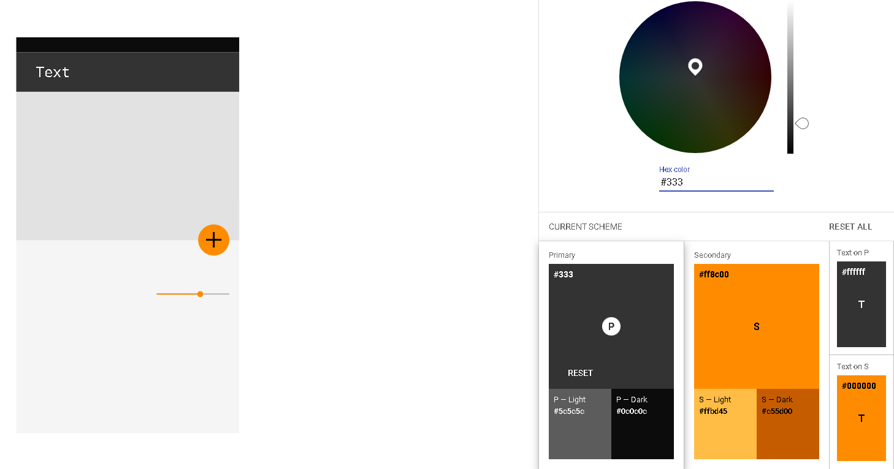

Documentación:
Documentación DevTools Firefox
Documentación URL GitHub
Documentación componentes
Documentación colores
Documentación aplicación colores
1.1 Colores:
Herramientas de interés:
Material.io
Paletton
Paleta de colores

1.2 Iconos:
Documentación Iconos Material Desing
Documentación Iconos w3Schools
Práctica Uso de Iconos con fuentes descargadas localmente
1.3 Fuentes:
Documentación CSS fuentes
Ejemplo utilización Google Fonts
1.4 Herramientas de prototipado:
Balsamiq
Figma
1.4.1 Figma:
Práctica Figma
Link prácitca
figma
1.4.2 Balsamiq:
Primera práctica:


Ejemplo Wireframing:

Wireframing for Responsive Design:

1.5 Guía de estilos:
Guia de estilos de la
UPV
Volver a la página de inicio